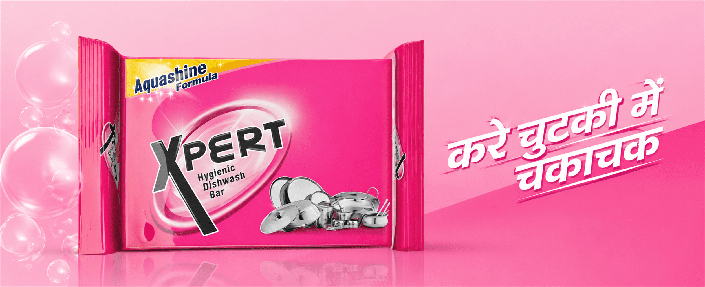
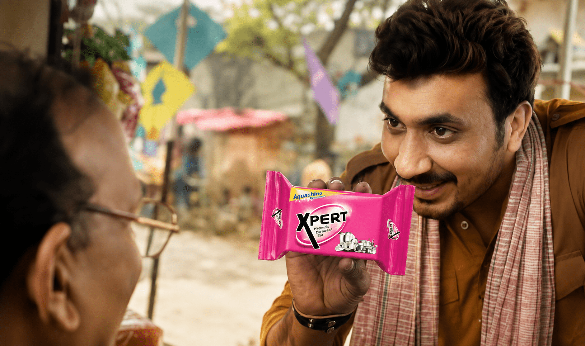

Pack colour, formula cues and utensil shine needed to stay consistent with the national product identity.
← Back to workA local voice.
Xpert · Haryana Film
A local voice.
A sparkling product promise.

Project overview
One cleaning benefit.
Spoken closer to home.
Regional communication works when it feels created for the audience, not simply translated. This Haryana execution gives Xpert’s hygienic dishwashing promise a direct, familiar voice.
The product remains unmistakable through saturated pink, reflective utensils and the Aquashine formula cue, while local-language expression makes the message immediate.
- Format
- Regional Product Film
- Product
- Dishwash Bar
- Core Thought
- Chamak + Hygiene
- Visual World
- Pink + Polished
The regional film
Product clarity.
Regional familiarity.
A direct demonstration and recognisable local delivery turn the cleaning promise into a compact piece of market-specific communication.
The challenge
Stay unmistakably Xpert.
Sound unmistakably local.
The language and rhythm had to feel natural to Haryana audiences rather than adapted after the fact.
The communication system
See the pack.
Hear the difference.
- 01
Lead with colour
Own the frame with Xpert pink and a large, readable product silhouette.
- 02
Show the shine
Reflective utensils make the cleaning result visual before copy explains it.
- 03
Speak locally
A familiar Haryana voice gives the benefit warmth, clarity and recall.
The visual language
Maximum pink.
Maximum product recall.
Bubbles, chrome utensils and a bold pack turn hygiene and shine into a high-impact FMCG world built to register quickly across screens.

The execution
Fast to recognise.
Easy to repeat.
Pack dominance
The hero product remains large enough to register instantly.
Shine language
Sparkle, chrome and reflection make performance sensorial.
Regional copy
Local expression increases immediacy without changing the core proposition.
Compact pacing
Product, benefit and mnemonic resolve in a short, retail-ready structure.
The outcome
National consistency.
Regional connection.
The film keeps Xpert’s product identity intact while giving the promise a closer cultural and linguistic relationship with Haryana consumers.
Instant recognition
Strong pack and colour ownership hold brand memory.
Local relevance
Regional language makes the message feel directly addressed.
Scalable system
The format can extend across markets without losing the master brand.
Same product strength.Closer market voice.
Need a national brand to speak locally?